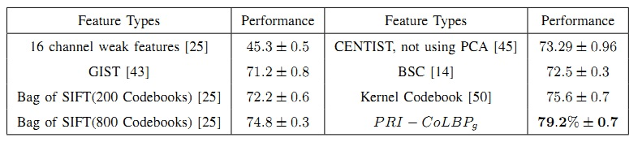

Texture Classification
In our experiment, we use 3, 40, 46 training samples for Brodatz, CUReT and KTH-TIPS individually. We directly extract PRI-CoLBP on the texture images and the feature dimension is 1180. We use one-vs-the-rest kernel SVM Classifier.


PRI-CoLBP is designed to capture spatial co-occurrence of LBP. For the table, we can find that PRI-CoLBP significantly outperforms multi-scale LBP. Meanwhile, it also exceed some state-of-the-art methods. Although extracting multi-scale and multi-orientation PRI-CoLBP could further boost the performance, we just demonstrate the effectiveness of the PRI-CoLBP. It should be noted that the PRI-CoLBP is computationally efficient. It takes about 0.031s to process an 200*200 image.
References
[35] H. Nguyen, R. Fablet, and J. Boucher, “Visual textures as realizations of multivariate log-gaussian cox processes,” CVPR, 2011.[8] J. Zhang, M. Marszalek, S. Lazebnik, and C. Schmid, “Local features and kernels for classification of texture and object categories: A comprehensive study,” CVPR, 2007.
[33] M. Varma and A. Zisserman, “A statistical approach to material classification using image patch exemplars,” PAMI, 2008.
[34] B. Caputo, E. Hayman, M. Fritz, and J. Eklundh, “Classifying materials in the real world,” Image and Vision Computing, 2010.
[6] S. Lazebnik, C. Schmid, and J. Ponce, “A sparse texture representation using local affine regions,” PAMI, 2005.
[9] T. Ojala, M. Pietik¨ ainen, and T. M¨ aenp¨ a¨ a, “Multiresolution gray-scale and rotation invariant texture classification with local binary patterns,” PAMI, 2002.
Material Recognition
The Flickr Material Database is chanllenging. FMD contains 10 classes which consist of fabric, foliage, glass, leather, metal, paper, plastic, stone, water and wood. Each category contains 100 images, where 50 in all 100 images is close-up views and the rest 50 are of views at object-scale. We extract PRI-CoLBP on the forground region provided by original authors. We use 50 training samples and the rest for test.

For single feature, PRI-CoLBP greatly outperforms bag of SIFT and kernel descriptor. Meanwhile, it also exceed the combinations of four kernel descriptors. It should be pointed out that SVM classifier works better than the augmented Latent Dirichlet Allocation (aLDA) method.
References
[22] C. Liu, L. Sharan, E. Adelson, and R. Rosenholtz, “Exploring features in a bayesian framework for material recognition,” CVPR, 2010.[37] D. Hu and L. Bo, “Toward robust material recognition for everyday objects,” BMVC, 2011.
Flower Recognition
The table shows a comparison between recent publications on the Oxford Flower 102 dataset. To failly compare our feature with new published work [27], we use the same classifier (Adaptive kernel approximation and linear SVM) with them. The mean per-class percent accuracy is applied.

First of all, we want to thank Andrew Zisserman's group for some valuable discussion. The work is firstly motivated by working on flower recognition project. Their works on flower segmentation and recognition are great.
For single feature, PRI-CoLBP outperforms its competitors, such as MSLBP, CoHED, Bag-of-foreground SIFT, color histogram. For feature combination, it also improves the work of Nilsback et al. and Chai's work.
References
[4] S. Ito and S. Kubota, “Object classification using heterogeneous co-occurrence features,” ECCV, 2010.[5] C. Kanan and G. Cottrell, “Robust classification of objects, faces, and flowers using natural image statistics,” CVPR, 2010.
[23] M. Nilsback and A. Zisserman, “Automated flower classification over a large number of classes,” ICVGIP, 2008.
[26] M. Nilsback, “An automatic visual flora - segmentation and classification of flowers images,” in PhD thesis, University of Oxford.
[27] Y. Chai, V. Lempitsky, and A. Zisserman, “Bicos: A bi-level co-segmentation method for image classification,” ICCV, 2011.
[42] X. Yuan and S. Yan, “Visual classification with multi-task joint sparse representation,” CVPR, 2010.
Leaf Recognition
Using adaptive threshold segmentation, we can automatically segment out the flower from white backgournd, and extract the PRI-CoLBP on the foreground region. Following the standard configuration, we use 25 training samples and the rest for test.

Leaf recognition problem is first dealed with as a shape recognition problem. We conclude our PRI-CoLBP and CENTRIST [45] as a texture-based method. The texture-based could well handle partial loss.
References
[24] O. S¨ oderkvist, “Computer vision classification of leaves from swedish trees,” Master’s Thesis, Linkoping University, 2001.[45] J. Wu and J. Rehg, “Centrist: A visual descriptor for scene categorization,” PAMI, 2011.
[46] H. Ling and D. Jacobs, “Shape classification using the inner-distance,” PAMI, 2007
[47] P. Felzenszwalb and J. Schwartz, “Hierarchical matching of deformable shapes,” in CVPR, 2007.
Food Recognition
In this paper, we totally follow the experimental setup of [15]. We run experiments on 61 categories and 7 major categories individually.

Only using gray images, our method greatly outperforms the work of [15]. Using color images like [15], we further improves our feature. The dimension of PRI-CoLBP on gray image is 1180, and the dimension of color PRI-CoLBP is 3560.
References
[15] S. Yang, M. Chen, D. Pomerleau, and R. Sukthankar, “Food recognition using statistics of pairwise local features,” CVPR, 2010.[48] J. Shotton, M. Johnson, and R. Cipolla, “Semantic texton forests for image categorization and segmentation,” CVPR, 2008.
Scene Classification
I will add the content later.


References
[14] N. Rasiwasia and N. Vasconcelos, “Holistic context modeling using semantic co-occurrences,” in CVPR, 2009.[25] S. Lazebnik, C. Schmid, and J. Ponce, “Beyond bags of features: Spatial pyramid matching for recognizing natural scene categories,” CVPR, 2006.
[43] A. Oliva and A. Torralba, “Modeling the shape of the scene: A holistic representation of the spatial envelope,” IJCV, 2001.
[45] J. Wu and J. Rehg, “Centrist: A visual descriptor for scene categorization,” PAMI, 2011.
[50] J. C. van Gemert, C. J. Veenman, A. W. M. Smeulders, and J. M. Geusebroek, “Visual word ambiguity,” PAMI, 2009.